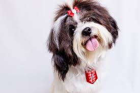
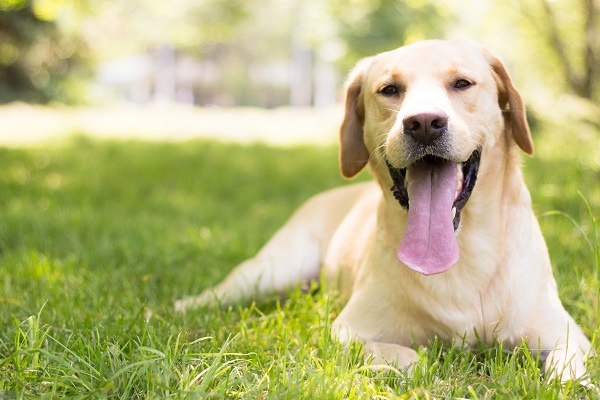

Sem Raça Definida (SRD)
Características gerais
 Não é à toa que o vira-lata faz tanto sucesso entre as famílias brasileiras. Único por natureza, cada cãozinho da raça apresenta características e personalidades muito próprias. Por isso, dificilmente você encontrará dois iguais no mundo.
Não é à toa que o vira-lata faz tanto sucesso entre as famílias brasileiras. Único por natureza, cada cãozinho da raça apresenta características e personalidades muito próprias. Por isso, dificilmente você encontrará dois iguais no mundo.
Oficialmente chamado de SRD (Sem Raça Definida), o vira-lata faz parte do grupo de cães que não têm origem delimitada, com misturas de duas ou mais raças em sua linhagem. Pensa em adotar um peludo? Acompanhe nosso guia e saiba tudo sobre esse pet tão querido!
Condição física
A raça vira-lata é uma verdadeira caixinha de surpresas. Sua condição física pode trazer traços bem diversos. Portanto, existem tomba-latas agitados, que precisam de bastante atividade física, e outros mais calminhos, que não demandam tanto exercício.
De todo modo, é importante conhecer bem as necessidades e os limites de cada cachorro. Ao receber um peludo como novo integrante da família, atente-se a detalhes como o porte do animal. Assim, você pode se programar quanto à rotina de atividades para uma vida sempre saudável!
Personalidade
 A personalidade de cada cãozinho é muito única, e no caso dos pets sem definição de raça isso é ainda mais complexo. Contudo, existem alguns traços comuns entre os SRDs, como esperteza, amizade e lealdade. Geralmente, eles são calmos e dóceis!
A personalidade de cada cãozinho é muito única, e no caso dos pets sem definição de raça isso é ainda mais complexo. Contudo, existem alguns traços comuns entre os SRDs, como esperteza, amizade e lealdade. Geralmente, eles são calmos e dóceis!
Vale destacar que, por mais que o temperamento do vira-lata não seja tão fácil de definir, é possível ter alguma ideia com base nas raças de seus pais. Se o cruzamento tiver raças de personalidade mais calma, existe a chance de o filhote herdar esse comportamento, assim como outras características.
A convivência com seu vira-latinha vai depender muito das particularidades do animal. Muitos tutores acreditam que os SRDs são mais desconfiados, devido ao histórico de maus tratos e abandono. Entretanto, isso não é uma regra, e costuma acontecer com cães adotados em fase adulta.
Além disso, é normal se questionar se o cachorro vira-lata grande pode viver em apartamento. No entanto, não há uma resposta clara, já que isso varia de acordo com os hábitos e necessidades, como as atividades físicas e o conforto de cada peludo.
A convivência com seu vira-latinha vai depender muito das particularidades do animal. Muitos tutores acreditam que os SRDs são mais desconfiados, devido ao histórico de maus tratos e abandono. Entretanto, isso não é uma regra, e costuma acontecer com cães adotados em fase adulta.
Além disso, é normal se questionar se o cachorro vira-lata grande pode viver em apartamento. No entanto, não há uma resposta clara, já que isso varia de acordo com os hábitos e necessidades, como as atividades físicas e o conforto de cada peludo.
Cuidados com a saúde
 A boa saúde sempre foi um ponto forte dos vira-latas. Mesmo assim, é fundamental ficar de olho em condições comuns em determinados portes, como problemas nas articulações. A obesidade também é uma situação que pode ser comum em cãezinhos.
A boa saúde sempre foi um ponto forte dos vira-latas. Mesmo assim, é fundamental ficar de olho em condições comuns em determinados portes, como problemas nas articulações. A obesidade também é uma situação que pode ser comum em cãezinhos.
Portanto, não deixe de levar seu amigo para consultas com o especialista. Além disso, mantenha a cartela de vacinas dele sempre em dia. Outra recomendação é castrá-lo, para evitar períodos de cio e reprodução indesejada.
Shih Tzu
Características gerais
 Tutores que procuram por um novo amigo de quatro patas vão amar ter um cachorro Shih Tzu como companhia. Famoso pela fofura e pela beleza dos pelos alongados, ele se adapta muito bem à família humana, já que gosta de dar e receber carinho e é muito animado. Esse cãozinho não precisa de muito espaço, portanto, pode viver tranquilamente em lares menores, como apartamentos. Isso não impede que ele possa ser criado em casas grandes, com quintais, por exemplo. A versatilidade e o fato de ser um bichinho que se acostuma facilmente a diferentes tipos de ambientes, faz desta raça uma das mais queridas!
Tutores que procuram por um novo amigo de quatro patas vão amar ter um cachorro Shih Tzu como companhia. Famoso pela fofura e pela beleza dos pelos alongados, ele se adapta muito bem à família humana, já que gosta de dar e receber carinho e é muito animado. Esse cãozinho não precisa de muito espaço, portanto, pode viver tranquilamente em lares menores, como apartamentos. Isso não impede que ele possa ser criado em casas grandes, com quintais, por exemplo. A versatilidade e o fato de ser um bichinho que se acostuma facilmente a diferentes tipos de ambientes, faz desta raça uma das mais queridas!
Esse cãozinho não precisa de muito espaço, portanto, pode viver tranquilamente em lares menores, como apartamentos. Isso não impede que ele possa ser criado em casas grandes, com quintais, por exemplo. A versatilidade e o fato de ser um bichinho que se acostuma facilmente a diferentes tipos de ambientes, faz desta raça uma das mais queridas!
Condição física
O cão da raça Shih Tzu tem o focinho achatado, ou síndrome braquicefálica, o que pode prejudicar a respiração em atividades físicas com movimentações mais intensas. Nos dias de calor, frio e umidade excessivos, esse problema tende a piorar e deixar o animal ainda mais sensível.
Ele também é frágil e não possui muita força muscular. Além disso, não é tão enérgico, o que faz com que os exercícios físicos constantes não sejam tão necessários. Contudo, é bom ficar de olho para evitar problemas de sedentarismo.
Personalidade
Para quem procura um colega canino cheio de alegria e extrovertido, esse cão é perfeito. Os futuros criadores de Shih Tzu devem saber que ele adora ser pego no colo e se apega facilmente à família, principalmente quando se trata de um grupo acolhedor, que envolve o bichinho em sua rotina.
Por outro lado, eles podem ser bem teimosos e difíceis de lidar quando não passam por programas de adestramento. É muito importante que eles entendam logo cedo como funciona a hierarquia da casa, para que obedeçam os comandos com mais facilidade.
Já deu para notar que se trata de um bichinho super apegado, não é mesmo? Portanto, não é uma boa opção para tutores que passam pouco tempo em casa. Eles não se sentem tão bem sozinhos e essa condição pode trazer problemas ainda maiores caso fiquem sem companhia por longos períodos.
A convivência é ótima tanto com adultos como com as crianças. Contudo, os pequenos têm que tomar certos cuidados, já que se trata de um cachorro mais sensível que perde o fôlego mais rapidamente.
Trata-se de um cão com sentido de alerta mais aguçado, isso significa que ele vai latir muito e por diferentes razões. Nesse caso, o mais recomendável é tratar esse aspecto com as lições do próprio adestramento.
A socialização com outros animais é quase que instintiva. Ele vai ser dócil e tranquilo com um cão de raça distinta, porém, isso não elimina a necessidade de habituação ainda quando filhotinho, assim como acontece com qualquer animal.
Cuidados com a saúde

O Shih Tzu tem cuidados bastante comuns em relação à saúde. Entretanto, é fundamental ficar de olho em probleminhas específicos da raça, comumente ligados à respiração, por conta do focinho achatado. Casos de roncos e espirros podem ser agravados e gerar complicações como apneia ou infecções respiratórias.
Um outro problema sério é a propensão à coprofagia, hábito instintivo de comer as fezes. São muitos os motivos que levam a essa prática, mas ela tem solução e pode ser tratada com a ajuda de um veterinário.
A prevenção de infecções no ouvido é essencial, por isso, é importante manter a limpeza sempre em dia. Esse cãozinho também possui tendência a obesidade, por isso, deve seguir uma dieta e não levar uma rotina sedentária.
Yorkshire
Características gerais
 É muito simples reconhecer o Yorkshire. De porte pequeno, pelagem longa e reta de cada lado, olhos escuros brilhantes, de tamanho médio com orelhas eretas pequenas e pontudas. Faz correria para todos os lados da casa e é muito enérgico. Com todas as características somadas, não restam dúvidas: você está diante — ou correndo atrás — de um Yorkshire Terrier.
É muito simples reconhecer o Yorkshire. De porte pequeno, pelagem longa e reta de cada lado, olhos escuros brilhantes, de tamanho médio com orelhas eretas pequenas e pontudas. Faz correria para todos os lados da casa e é muito enérgico. Com todas as características somadas, não restam dúvidas: você está diante — ou correndo atrás — de um Yorkshire Terrier.
Inquietos, a palavra preguiça não existe no dia a dia desses cãezinhos. Para eles, toda hora é hora de brincar, principalmente com o tutor, agindo como uma sombra e exigindo total atenção a todo momento. Sociáveis, os Yorkshires são amorosos e se incomodam quando passam muito tempo sozinhos. Pequenos, adoram explorar buracos atrás de novidades, fazendo valer suas origens de cães caçadores.
Condição física
Cachorros da raça Yorkshire são esportivos, apesar de serem uma das principais escolhas de moradores de apartamento. Portanto, mesmo com pouco espaço em casa, espere ter correria por todos os lados com um pequeno desses à solta.
Mesmo que se adaptem rápido e adorem ter um lar para chamar de seu, os Yorkshires preferem a companhia do seu tutor para um passeio na rua ou brincadeiras (como jogar a bolinha para eles buscarem) do que ficarem durante um longo tempo deitados no colo.
Personalidade
Descendente de “caçadores”, o Yorkie mantém suas características de forma adaptada. O cãozinho adora explorar os menores espaços dos ambientes que habita, podendo gerar uma bagunça na casa. Portanto, se sentir falta do seu companheiro por algum tempo, é provável que ele esteja aprontando.
Além disso, o pet é extremamente apegado ao tutor. Mas nem tente deixá-lo no seu colo apenas acariciando-o. Confiante e independente, o que os cãezinhos dessa raça gostam mesmo é de sair correndo por todos os lados na companhia do seu tutor!
Devido à intensa ligação com a presença humana e sociabilização, os tutores devem se atentar caso precisem deixar o pet sozinho. A sua energia e alegria contagiam os familiares que convivem ao redor, tornando a casa em um ambiente muito mais divertido e, principalmente, agitado.
Apesar de amigáveis com humanos, cachorros da raça Yorkshire possuem certas dificuldades em conviver com outras raças ou animais de outras espécies, como gatos. No entanto, se houver um treinamento desde filhote com seu pet, ele poderá se adaptar melhor.
Assim como outros pets, é recomendado que desde filhote haja uma socialização com humanos e, principalmente, outros pets. Não que isso seja um problema para o Yorkie, que adora pessoas, mas para que ele estimule seus sentidos e saiba conviver com outros animais, sendo gatos ou até mesmo outro cãezinhos.
Se você é uma pessoa que recebe muitas visitas em casa, não se preocupe, o seu pequeno não irá se assustar com novas pessoas. Aliás, é capaz que as visitas se assustem — no bom sentido — com a abordagem feliz e saltitante dos Yorks.
Com toda a sua fofura, as crianças também vão adorar ter um Yorkie como companheiro no dia a dia e vice-versa. No entanto, é importante que a criança saiba que o cãozinho gosta mesmo é de brincadeiras e correrias ao invés de deixá-lo no colo por muito tempo.
Cuidados com a saúde
Problemas com saúde não são uma exclusividade de humanos, animais também possuem predisposições a doenças em algumas situações. No caso dos Yorkies, quando ainda filhotes, pode haver um retardamento no nascimento dos dentes permanentes, acarretando em infecções na gengiva do cãozinho.
Outros problemas podem atingir animais dessa raça, como a luxação patelar. Comum em cães menores, a doença é causada quando a patela não está alinhada e gera dificuldade para caminhar. Esse tipo de luxação possui quatro graus e pode ser necessária a realização de cirurgia para correção.
Além disso, o Colapso de Traqueia, também presente em cãezinhos dessa raça, provoca tosse crônica e seca. No tratamento pode ser necessária a intervenção de uma cirurgia ou apenas o uso com remédios. Por fim, o Yorkshire possui o sistema digestivo sensível.
Poodle
Características gerais
O cachorro Poodle possui muitas particularidades. Um dos seus maiores reconhecimentos é a sua inteligência: a raça está em segundo lugar no ranking. Somado esse talento à sua tradicional pelagem encaracolada, o cãozinho se tornou um dos mais famosos do Brasil e do mundo.
Outra característica dos peludos é possuírem quatro portes: Grande, Médio, Anão e Toy. Em todos, o Poodle se mostra um cão fiel ao seu tutor e muito obediente, aspectos que tornaram o cachorro tão querido entre os tutores.
Condição física
O Poodle é do tipo de cachorro que adora gastar toda a sua energia brincando com o seu tutor. Além disso, eles são excelentes nadadores, portanto, a atividade pode ser uma excelente escolha para ajudar a gastar a energia do cãozinho.
Personalidade
Apesar de ser um cachorro animado, o Poodle não se mostra como um cãozinho agitado. Excelentes companheiros, eles adoram brincar com os seus tutores e se mostram muito fiéis. Outro ponto da personalidade do animal é a sua inteligência.
O Poodle se tornou muito popular em todo o mundo justamente pelo seu temperamento. Exceto pelo Poodle gigante, o mais calmo e tranquilo, todos os outros portes possuem semelhanças em seu comportamento — mostrando-se afetuosos e brincalhões.
Assim como diversas outras raças, a socialização do Poodle é importante desde filhote para que ele não se torne um cão teimoso ou bagunceiro. Procure dar atenção ao animal e faça com que ele se sinta parte da família. assim, ele terá um ótimo convívio com crianças ou outros animais, até mesmo gatos.
Cuidados com a saúde
Uma das grandes características da raça Poodle é possuir uma alta expectativa de vida, isso porque os cãezinhos geralmente são muito saudáveis. No entanto, algumas doenças podem acabar afetando o animal.
Nos menores, pode haver a possibilidade de luxação patelar, uma doença que dificulta a caminhada dos pets — o tratamento pode ser realizado com remédios ou até mesmo cirurgia e é comum em raças pequenas.
Em cachorros na fase sênior, há uma possibilidade de desenvolver a catarata, uma doença que dificulta a visão. Porém, com a presença frequente ao médico veterinário, o cãozinho se manterá saudável e disposto.
Lhasa Apso
Características gerais
 O Lhasa Apso é um dos cachorros de pequeno porte preferidos de quem deseja ter um pet em casa, mas mora em ambiente pequeno. Com pelos longos, orelhas finas e latido marcante, ele é um verdadeiro cão de guarda e grande companheiro.
O Lhasa Apso é um dos cachorros de pequeno porte preferidos de quem deseja ter um pet em casa, mas mora em ambiente pequeno. Com pelos longos, orelhas finas e latido marcante, ele é um verdadeiro cão de guarda e grande companheiro.
Por muito tempo, a raça foi considerada mística e sagrada. Hoje, ele é muito confundido com seus amigos da raça Shih Tzu, porém algumas características físicas,como seu instinto protetor e o seu temperamento forte, ainda fazem do cachorro Lhasa Apso um pet único.
Condição física
Embora seja apaixonado por brincadeiras e adorar se divertir, o Lhasa Apso não é daqueles cãezinhos que precisam de muitos exercícios físicos. Por ele, tardes de soneca ao lado do tutor são momentos mais do que incríveis. Sendo um dos cãezinhos mais recomendados para apartamento, passeios curtinhos no início das manhãs ou aos finais de tardes já são ótimas atividades para ele.
Não estranhe se, ao encontrar com as crianças, seu pet se encher de energia e vontade de se divertir. A raça é uma das que mais se dão bem com elas e, apesar de não ser muito de esportes e outras atividades, o Lhasa Apso não nega bons momentos de alegria.
Personalidade
 O porte nobre de um Lhasa Apso não é visto apenas nas suas características físicas, mas também em seu temperamento. Ele cuidará do seu tutor e de toda a família com a lealdade digna de um nobre, assim como os seus ancestrais.
O porte nobre de um Lhasa Apso não é visto apenas nas suas características físicas, mas também em seu temperamento. Ele cuidará do seu tutor e de toda a família com a lealdade digna de um nobre, assim como os seus ancestrais.
Por não ser muito de exercícios, ele é aquele cãozinho que prefere passar um bom tempo no colo ou ao lado do seu tutor. Logo, não economize carinhos com o seu pet e lembre-se: com a personalidade forte de um Lhasa Apso, nem sempre será fácil agradá-lo.
Os níveis de adaptabilidade da raça também são grandes. Ela pode se dar tão bem em ambientes grandes, como nos pequenos. Entretanto, quando o assunto é a separação do seu tutor, ele poderá ficar um pouco triste, já que é bem dependente de companhia.
A inteligência de um Lhasa Apso também merece destaque. Se treinado desde a infância, ele poderá atender a todos os seus chamados com muita facilidade. Inclusive, o adestramento é recomendado desde cedo.
O instinto guardião não é a única característica marcante do Lhasa Apso personalidade. Esse cãozinho também é muito dócil e pode se dar muito bem com estranhos. Por isso, é uma ótima alternativa para os que são apaixonados por animais de estimação e costumam receber muitas visitas em casa.
Podemos dizer que ele é um cãozinho um pouco desconfiado. A princípio, ele não dará muita bola aos estranhos. Porém, assim que outra pessoa ganha a confiança de um Lhasa Apso, uma grande amizade pode nascer.
O jeito mais fácil de se conquistar um pet dessa raça é brincando. Nesse ponto, as crianças têm vantagens, pois ambos se adoram. Muito simpático, ele não nega uma boa farra, desde que esteja descansado e com vontade de brincar.
Seu futuro tutor deve ter bastante paciência para conquistá-lo. Caso seja um dos apaixonados pela raça, é recomendado integrar a família, primeiramente com um Lhasa Apso filhote. Assim, você terá mais tempo para adestrá-lo e ele terá muito mais facilidade em socializar com todos do lar.
Cuidados com a saúde
 Alguns probleminhas na saúde do Lhasa Apso são mais comuns do que em outros cãezinhos. Devido ao formato das suas orelhinhas, as complicações auriculares podem acontecer com mais facilidade, já que ao beber água o pet pode acabar molhando essa região e acumulando fungos e bactérias.
Alguns probleminhas na saúde do Lhasa Apso são mais comuns do que em outros cãezinhos. Devido ao formato das suas orelhinhas, as complicações auriculares podem acontecer com mais facilidade, já que ao beber água o pet pode acabar molhando essa região e acumulando fungos e bactérias.
Por isso, frequentemente, você deve verificar os ouvidos do seu pet e limpá-los com as soluções otológicas recomendadas. Também não se esqueça de levá-lo ao veterinário regularmente. Um check-up sempre cai bem e o ajuda a ter uma vida muito mais saudável e melhor.
Os ossos e os olhinhos do seu pet também merecem atenção especial. Esses probleminhas podem afetar qualquer cãozinho, mas também podem ser evitados com uma boa alimentação, como vamos conferir a seguir.
Buldogue Francês
Características gerais
O cachorro Buldogue francês é conhecido por ser tranquilo, atencioso e muito companheiro de seus amigos humanos. Geralmente se dá muito bem com crianças devido a seu jeito brincalhão e dócil!
Esse pequeno pet gosta de se divertir, mas é inegável sua essência de cão de companhia, por isso o tutor de um Buldogue pode contar com ele para brincadeiras e também para relaxar em casa.
Condição física
Aqui vamos contar tudo sobre Buldogue francês e seu comportamento, mas antes é importante que conheça suas características e necessidades físicas. Este não é um pet enérgico, mas é importante que mantenha uma rotina de caminhadas diárias para evitar o sobrepeso, por isso vive muito bem em apartamentos.
Esse é um cãozinho braquicefálico e, por isso, não é muito fã de calor intenso. Lembre-se de cuidar para que ele não desidrate nesses períodos e evite fazer exercícios com o pet em horários de pico do sol.
Personalidade
Os Buldogues são muito amorosos com sua família humana, mas também sempre esperam a retribuição desse carinho e provavelmente cobrarão de forma delicada apoiando as patinhas. Entretanto, se busca um pet para acompanhá-lo em aventuras e esportes, ele provavelmente não se empolgará tanto com as atividades.
Muito bem-humorados e brincalhões, esses cães precisam que seus tutores sejam firmes e pacientes com suas características travessuras. Apesar desse jeito, eles não possuem tanta energia assim, pouco tempo de atividade por dia já é o suficiente para ficarem satisfeitos e felizes.
Apesar de serem muito amigáveis e dóceis, podem ter sinais territorialistas e possessivos em relação a seus companheiros humanos, principalmente se houver outros cães no ambiente. Sendo assim, é importante que estimule o contato dos Buldogues com outros pets desde cedo.
Cuidados com a saúde
Todos possuem características de nascença que podem propiciar certas doenças, não que seja uma regra que a enfermidade vá nos acometer, mas há um risco maior. O mesmo acontece com os animais e, no caso do Buldogue francês, as mais comuns são oculares, como cataratas, deformações das pestanas e entrópio.
Mas não se preocupe! Fazendo um acompanhamento com o veterinário e ficar sempre atento aos sinais do pet são maneiras eficazes de tratar esses probleminhas ou até mesmo evitá-los.
Maltês
Características gerais
 O Maltês é facilmente reconhecido pelo seu pequeno porte e por conta da pelagem branca super macia. Mas esses não são os únicos atributos que fazem da raça uma das preferidas por vários tutores em todo o mundo .
O Maltês é facilmente reconhecido pelo seu pequeno porte e por conta da pelagem branca super macia. Mas esses não são os únicos atributos que fazem da raça uma das preferidas por vários tutores em todo o mundo .
Trata-se de um cão inteligente, esperto, dócil e brincalhão. Com muita gentileza e aparência delicada, ele pode enganar muita gente. Isso porque, é um peludinho cheio de energia e, não à toa, é comumente utilizado para outras funções além de companhia. Ele se destaca como pet de terapia e concorre em competições de agility, tracking e obediência.
Condição física
Já deu para notar que estamos falando de um cãozinho que adora se movimentar. Embora seja tão enérgico, ele também pode apresentar problemas de obesidade por conta de seu metabolismo lento. Portanto, não há nada melhor do que adotar uma rotina com exercícios físicos.
Por outro lado, lembre-se de que não é um cachorro de característica forte e super resistente. As atividades devem ser dosadas e equilibradas. O ideal é caminhar com ele diariamente em percursos com mais de um quilômetro de extensão durante uma hora. De todo modo, se você pensa em ter um amiguinho desses, prepare-se para dar muita atenção e carinho!
Personalidade
 Talvez já tenha ficado bem claro que o Maltês adora se divertir e não dispensa o carinho do tutor. Quem pensa em ter um bichinho desses em casa deve ter em mente que se trata de um pet que está sempre procurando por atenção.
Talvez já tenha ficado bem claro que o Maltês adora se divertir e não dispensa o carinho do tutor. Quem pensa em ter um bichinho desses em casa deve ter em mente que se trata de um pet que está sempre procurando por atenção.
Mas nem tudo são flores. Lembre-se de que se trata de um cachorrinho inteligente. Muitas vezes, ele pode ser teimoso e determinado. Por outro lado, ele pode aprender facilmente a respeitar a hierarquia da casa, principalmente se o adestramento começar ainda durante a infância.
A confiança desses bichinhos nos humanos é impressionante. Não se assuste se seu Maltês pedir o afago de algum desconhecido. Essa característica cordial e super gentil é um dos traços mais marcantes da raça.
O comportamento do Maltês também é ótimo para o convívio com outros animais e crianças. Um ponto super legal a ser levado em consideração, é que, mesmo que se trate de um cão originalmente agitado, ele também pode se adaptar a rotina de seu tutor. Por isso, a raça tem sido adotada como companhia de idosos e pessoas com mobilidade reduzida.
A socialização do Maltês não demanda tantas preocupações. Porém, assim como com outros pets, é preciso proporcionar um período de adaptação do animal ao novo lar e fazer as alterações necessárias na rotina, para que ele não fique sem companhia durante longos períodos.
Lembre-se de que se trata de um bichinho muito apegado à família adotiva. Portanto, o tutor deve trabalhar desde cedo a chamada “ansiedade da separação”, que é quando o animal sente muita falta dos donos quando fica sozinho. O ideal é fazer com que ele se adapte a situações do tipo quando ainda filhote.
Cuidados com a saúde
 De modo geral, esses cachorros tendem a ser muito saudáveis. Contudo, determinadas doenças são típicas da raça. Alguns podem apresentar complicações cardíacas, com sintomas de cansaço excessivo. Nesses casos, o indicado é sempre procurar o médico-veterinário.
De modo geral, esses cachorros tendem a ser muito saudáveis. Contudo, determinadas doenças são típicas da raça. Alguns podem apresentar complicações cardíacas, com sintomas de cansaço excessivo. Nesses casos, o indicado é sempre procurar o médico-veterinário.
Outro probleminha comum é a tendência ao sobrepeso. Portanto, o cãozinho deve manter bons hábitos alimentares, com refeições balanceadas, aliadas às atividades físicas e brincadeiras diárias.
Golden Retriever
Características gerais
 O cachorro Golden Retriever possui um grande porte, é muito forte e peludo e seus olhos escuros transmitem a doçura de seu temperamento. Suas orelhinhas caídas e a semelhança de sua boca a um sorriso são características irresistíveis para quem ama pet.
O cachorro Golden Retriever possui um grande porte, é muito forte e peludo e seus olhos escuros transmitem a doçura de seu temperamento. Suas orelhinhas caídas e a semelhança de sua boca a um sorriso são características irresistíveis para quem ama pet.
A raça é extremamente amável, muito companheira dos tutores e fica ainda mais alegre na presença de crianças. Se bem treinada, pode ser uma excelente companhia para gatos e outros animais.
Certamente uma das principais características do Golden, que o torna um dos cães mais populares, é a sua alta sociabilidade e anseio por afeto. Pode-se dizer que foram feitos para a família e, por isso, precisam ficar junto a seu “bando humano”, dentro de casa, e pouco tempo sozinhos no quintal.
Condição física
Os cães da raça Golden são muito ativos e robustos, sendo excelentes para atividades como cão-guia para cegos, ajudante de deficientes motores e guardião. Recomenda-se que pratiquem de 40 a 60 minutos de exercícios físicos diários, sejam caminhadas, corridas, brincadeiras ao ar livre ou jogos de buscar.
A raça tem um instinto de trabalho e, por isso, precisa ter algo dinâmico para fazer. Sendo assim, outra possibilidade é treiná-los para obediência, colocá-los em aulas de agilidade ou realizar outras atividades físicas. Tudo isso é altamente estimulante para o físico e a mente desses peludos.
Personalidade
 Eles são excelentes cães de companhia, calmos, doces, equilibrados, afetuosos, gentis e muito pacientes. Entretanto, também precisam gastar suas energias de algum modo. É recomendada a prática de natação e brincadeiras agitadas entre o tutor e o peludo.
Eles são excelentes cães de companhia, calmos, doces, equilibrados, afetuosos, gentis e muito pacientes. Entretanto, também precisam gastar suas energias de algum modo. É recomendada a prática de natação e brincadeiras agitadas entre o tutor e o peludo.
A raça é altamente inteligente e, por isso, com pouco esforço torna-se altamente capacitada para tarefas delicadas, como de auxílio a pessoas portadoras de deficiências, ou para conviver com crianças pequenas.
Goldens geralmente gostam de todos que entram em contato com ele e isso fica evidente em seus gestos. Seus saltos chegam a ser divertidos! Felizmente, se iniciar os treinamentos com o Golden Retriever filhote, ele rapidamente saberá como controlar essas emoções e ser ainda mais delicado.
Vale ressaltar a importância de passar instruções desde cedo ao seu cãozinho de forma doce. Apesar de dificilmente serem cães de guarda, é essencial que o Golden adulto saiba controlar seus animados instintos para não assustarem outros animais e crianças e para que a socialização seja cada vez melhor.
Cuidados com a saúde
 Para ficar ainda mais por dentro de tudo sobre Golden Retriever, é importante saber que todas as raças possuem predisposição a certas doenças devido a suas características morfológicas. No caso do Golden, catarata, atrofia progressiva da retina, displasia do cotovelo e displasia da anca são problemas comuns.
Para ficar ainda mais por dentro de tudo sobre Golden Retriever, é importante saber que todas as raças possuem predisposição a certas doenças devido a suas características morfológicas. No caso do Golden, catarata, atrofia progressiva da retina, displasia do cotovelo e displasia da anca são problemas comuns.
Mas, com um bom acompanhamento veterinário e seguindo os cuidados necessários, seu pet continuará bem saudável e disposto como sempre.
Labrador
Características gerais
O cachorro Labrador é irresistível para quem ama animais. Uma raça muito simpática, que ama agradar seus companheiros humanos e fazer a alegria da casa. Além de fiel, se bem treinado, pode dar um excelente suporte a pessoas com necessidades especiais e deficientes físicos.
Além do temperamento, sua aparência também é encantadora! O Labrador chocolate é muito conhecido, mas a raça também pode ter cores amarelo e preto. Seus olhos demonstram que estão realmente sempre atentos e ativos.
Certamente, a principal característica dessa raça é a sua paixão por água e ausência de agressividade ou timidez. É o cão perfeito para quem tem um quintal espaçoso em casa, porque ele ama brincar e correr.
Condição física
O Labrador Retriever é um excelente nadador, pois possui membrana interdigital em suas patas, o que torna o nado mais rápido. Sua pelagem é um pouco oleosa, o que o mantém aquecido e o ajuda a flutuar e a se secar. O focinho desse cão também é bem desenvolvido e por isso possui um olfato excelente.
Personalidade

Labradores são muito carinhosos, mas também acumulam muita energia facilmente. Por isso, é recomendado que pratique exercícios físicos, como corrida e natação, e brincadeiras agitadas, para manter a tranquilidade do seu melhor amigo de quatro patas!
Geralmente, cães Labradores são muito astutos, por isso captam treinamentos de forma rápida, e são bem disciplinados, sendo capazes de realizar trabalhos mais delicados e minuciosos, como guia para cegos ou como cães farejadores.
Labradores latem pouco e nunca são agressivos, fatores que os fazem muito parceiros de crianças e companheiros encantadores. Em geral, eles são muito doces, mas esse lado ficará ainda mais evidente se forem treinados desde cedo.
É importante lembrar que o processo de adestramento não deve ser coercitivo, apenas firme. Se as aulas forem regulares, rapidamente seu cãozinho aprenderá a controlar melhor seus impulsos vibrantes e a socialização com outros animais e pequenos companheiros humanos será cada vez melhor.
Cuidados com a saúde
Independentemente da raça do cachorro, as características morfológicas podem ser causadoras de doenças. O Labrador Retriever possui predisposição à displasia coxofemoral e de cotovelo, catarata, atrofia progressiva de retina e miopatia da cauda.
Mas não se preocupe! Levando seu amigão com frequência a consultas veterinárias e seguindo rigorosamente as recomendações, seu cãozinho seguirá saudável, disposto e alegre.
Pug
Características gerais
 O Pug é um cão de pequeno porte, com olhinhos expressivos e grandes, cabeça arredondada, rabinho enrolado e muitas ruguinhas pelo corpo. A raça é extremamente amigável e encanta com muita facilidade crianças e outros animais, até mesmo os gatos. Muito amorosos e apegados aos humanos, eles ficam plenamente felizes simplesmente por fazerem parte de uma família.
O Pug é um cão de pequeno porte, com olhinhos expressivos e grandes, cabeça arredondada, rabinho enrolado e muitas ruguinhas pelo corpo. A raça é extremamente amigável e encanta com muita facilidade crianças e outros animais, até mesmo os gatos. Muito amorosos e apegados aos humanos, eles ficam plenamente felizes simplesmente por fazerem parte de uma família.
Assim como o ronronar dos felinos é capaz de acalmar seus tutores, o cachorro Pug fazem um barulhinho durante a respiração que os torna ainda mais especiais. Isso acontece porque são cães braquicefálicos, ou seja, possuem focinho achatado. Essa característica também faz com que sejam menos tolerantes ao calor, afinal, quando o pet tem focinho comprido, o ar é esfriado antes que chegue aos pulmões.
Condição física
Eles não precisam gastar tanta energia e, consequentemente, não são esportivos, mas aguentam bem a agitação das crianças. Isso, associado à boa adaptação e a pouco espaço, faz com que muitos moradores de apartamento procurem pelo cão Pug para ter uma adorável companhia.
Entretanto, o Pug adulto tem tendência ao ganho de peso e, normalmente, são bem gulosos e preguiçosos, podendo ficar por horas no colo de seus tutores. Por isso, é indicada a prática de exercícios físicos leves, sempre com supervisão e controle rígido da dieta.
Personalidade
 Desde o surgimento da raça, o cachorro da raça Pug tem temperamento estável, e é um perfeito cão de companhia. Após centenas de anos ao lado da nobreza, o pet manteve como características principais o amor, a fidelidade e dedicação aos tutores. Além disso, a tendência do cão é ser calmo e de bom humor.
Desde o surgimento da raça, o cachorro da raça Pug tem temperamento estável, e é um perfeito cão de companhia. Após centenas de anos ao lado da nobreza, o pet manteve como características principais o amor, a fidelidade e dedicação aos tutores. Além disso, a tendência do cão é ser calmo e de bom humor.
Na maioria da vezes avesso a esportes intensos, preferem manter-se apenas ao lado de seus tutores recebendo carinhos e relaxando. É perfeito para quem mora em apartamento ou com pouco espaço, e para lidar com crianças, afinal, é muito afetuoso, brincalhão e inteligente.
Entretanto, devido a essa forte ligação que têm com os humanos e seu alto nível de sociabilização, é preciso que os tutores tenham bastante cuidado e atenção. Caso precise deixá-los por um tempo sozinhos, devem evitar, por exemplo, o desenvolvimento da ansiedade de separação.
De fato, o Pug não será um cão de caça ou vigilante, o que ele faz de melhor é ser o seu companheiro para todas as horas. Eles costumam ficar muito bem com a simples presença do tutor no mesmo ambiente. Então se quiser assistir televisão ou ler um livro, pode ficar tranquilo, ele estará lá apenas para te fazer companhia.
Como todo pet, é aconselhado que desde filhote haja uma socialização, colocando o Pug em contato com diversas pessoas e estimulando seus sentidos com experiências novas. Isso garante ainda mais que o bichinho seja bem extrovertido e sociável.
Esta raça de cachorro é ideal também para quem recebe muitas visitas, tem outros cães ou até mesmo outras espécies de animais, como gatos. Os Pugs são muito amigáveis e simpáticos e geralmente não ficam ariscos quando entram em contato com visitas diferentes do habitual.
Cuidados com a saúde
 Os cuidados com Pug devem ser em seus olhos saltados que precisam ser bem limpos. Isso para evitar úlceras de córnea que é conhecida como doença dos olhos secos. Sua pele também é muito sensível e precisa de certas precauções para evitar dermatites, como escolher o shampoo certo e fazer limpezas frequentes.
Os cuidados com Pug devem ser em seus olhos saltados que precisam ser bem limpos. Isso para evitar úlceras de córnea que é conhecida como doença dos olhos secos. Sua pele também é muito sensível e precisa de certas precauções para evitar dermatites, como escolher o shampoo certo e fazer limpezas frequentes.
A baixa capacidade aeróbica deste cãozinho também pode causar roncos e problemas cardiorrespiratórios, por isso não é aconselhado estimular exercícios físicos intensos. Além disso, seu focinho mais curto faz com que sejam menos tolerantes ao calor, então não é recomendado fazer caminhadas em dias quentes.